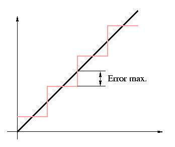

Els colors que modelem eventualment els voldrem mostrar utilitzant algun dispositiu de sortida gràfic, en general una impressora a color o una pantalla d'algun tipus. Per a fer-ho haurem de convertir el nostre model al del dispositiu. En el cas de pantalles, el model més natural és el model RGB, però la seva representació sol diferir de la presentada més amunt. Com sigui que la pantalla ha de ser capaç de refrescar-se ràpidament per a evitar que faci pampellugues (flickering), cal fer algunes simplificacions. La més generalitzada és usar sols aritmètica entera pel que fa a les intensitats de colors, amb el que l'intèrval [0,1] es representa mitjançant els enters entre 0 i 2n-1, on n designa el nombre de bits destinats a representar la intensitat en aquell color. Per exemple, si n=8, les intensitats es representaran pels enters 0 (apagat), 1 (mínima intensitat que podem mostrar d'aquest color), 2, ..., 255 (intensitat màxima d'aquest color que el dispositiu és capaç de presentar).
Aquesta conversió introdueix necessàriament un error de discretització (o d'arrodoniment). La figura ens mostra la seva naturalesa.  Aquest error no serà apreciable si n és prou gran, però sí si és petit. De fet veiem a la figura que el valor màxim d'aquest error és 1 / 2(2n-1). En realitat experimentalment es comprova que l'ull humà no pot diferenciar més d'unes 40 intensitats diferents d'un color, pel que els 255 nivells que ens donen 8 bits són més que suficients per a aconseguir un efecte de gradació contínua de color. En moltes ocasions és possible enganyar l'ull perquè es conformi amb molt menys. La figura de l'esfera il·luminada per tres focus de color usada més amunt tenia sols 255 colors diferents. Tanmateix, això requereix una cuidadosa elecció dels colors. Si repartim 8 bits entre les tres components de color, podrem dedicar, per exemple, 3 bits a dues d'elles i dos a la tercera (típicament al blau, al que som menys sensibles). Però tres bits sols ens donaran vuit nivells diferents en cada una d'aquestes components, i seran del tot insuficients per a representar gradacions contínues de color.
Cal tenir en compte que a vegades aquest error d'arrodoniment, en actuar independentment en les tres components de color, pot produir efectes inesperats. Suposem per exemple que a és un dels valors de transició entre dos valors discrets (un dels punts en què la diagonal negra talla una de les rectes verticals), i sigui S el salt entre dos valors discrets. Considereu un color com (a-S/10000,a+S/10000,a+S-1/10000), que l'arrodoniment mapejarà sobre (a-S/2,a+S/2,a+S/2). Així el color original, que era un gris lleugerament blavós es converteix, per la discretització, en un gris semblant, però lleugerament cian.
Un altre aspecte que cal tenir en compte en l'ús dels models de color
és la sobresaturació, que resulta per la imposició artificial d'un
nivell màxim d'energia a la llum. Així, quan fem càlculs amb models de
llum, pot resultar que la intensitat d'una (o més) components valguin
més d'u (veure Models
d'il·luminació empírics). En aquests casos caldrà escalar
uniformement totes les intensitats (de totes les components de color)
per tal que la màxima intensitat de l'escena sigui 1.0. Això suposa
un comportament linial, que no es correspon realment amb els nostres
ulls; en alguns casos pot interessar fer altres correccions no linials
perquè (per exemple) les parts en ombra d'una escena altrament molt
brillant no siguin completament negres.